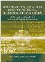

Este documento da sua estante não contém nenhuma anotação e não foi arquivado em nenhuma pasta.
Entre para ver as anotações que você tem.

Software Estimation Best Practices, Tools, and Techniques : A Complete Guide for Software Project Estimators
Chemuturi, Murali
Páginas: 321 Editor: J. Ross Publishing Inc. Local: Ft. Lauderdale, FL, USA Data de Publicação: 2009 Idioma do Documento: en
Número de Chamada LC: QA76.76.D47 -- C48 2009eb eISBN: 9781604276732 pISBN: 9781604270242 Número Decimal Dewey: 005.1/4 Número OCLC: 720339439